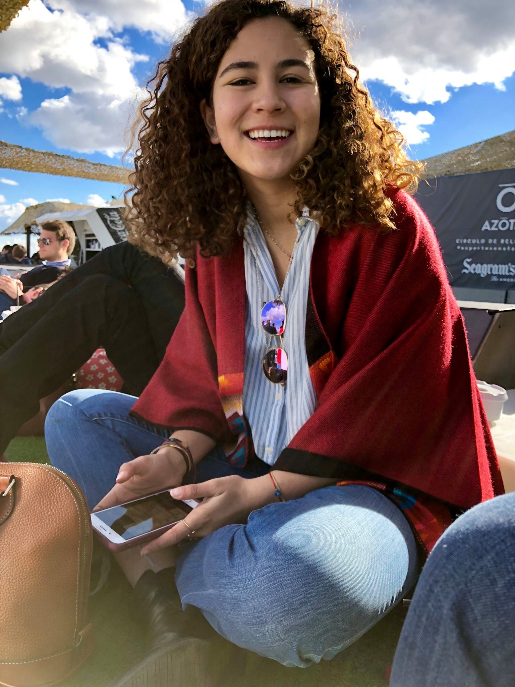
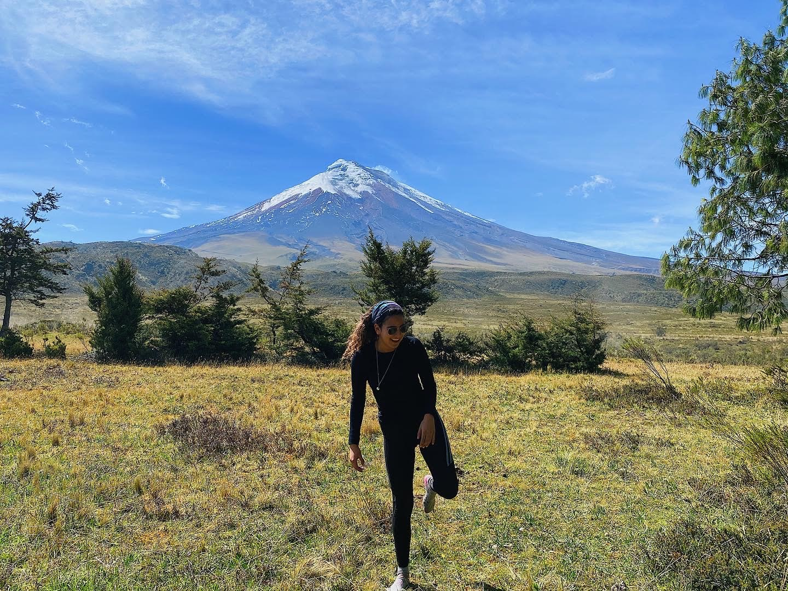

Hi! 👋
I am Juliana Vega del Castillo, a student at Tufts University,
class of 2021.
My majors are Computer Science & Engineering Psychology.
I was born and raised in Quito, Ecuador in a family that encouraged me to
pursue my passions, whatever those may be.
As of now, I am passionate about Software Enineering, User Experience, and
mountains.
What is my life goal? To live intensely.


¡Hola! 👋
Me llamo Juliana Vega del Castillo y estudio en
Tufts University.
Me graduo en Mayo del 2021 con un título en Ingeniería de
sistemas y otro en Ingeniería de la psicología.
Crecí en Quito, Ecuador en una familia que me impulsó a hacer lo que me
apasiona, sea lo que sea.
Hoy en día, me apasiona la ingeniería de sistemas, el diseño de la experiencia
del usuario y las montañas.
¿Cuál es mi meta en la vida? Vivir intensamente.